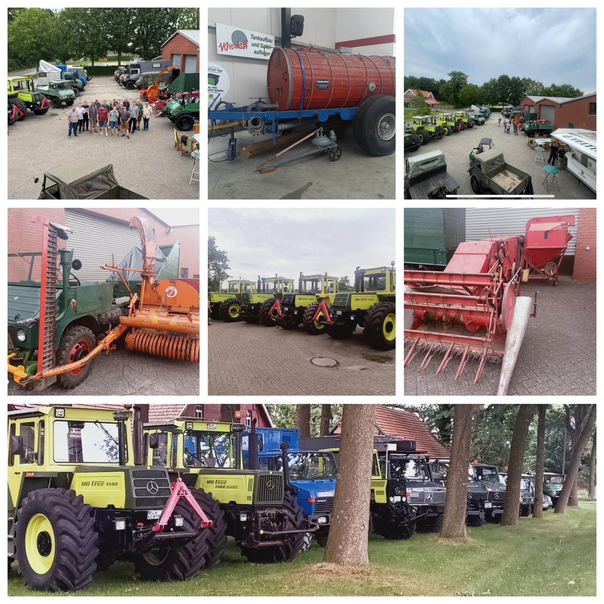

Eine Gruppe startete am Nachmittag im Konvoi von Versmold und legte dabei rund 99 km zurück. Auf dem Hof von Reinhold Hense in Baccum trafen nach und nach alle Teilnehmer ein. Nach einer herzlichen Begrüßung blieb Zeit für erste Gespräche und einen Blick auf die mitgebrachten Fahrzeuge.
Anschließend machten wir uns zu einer kleinen Ausfahrt auf den Weg. Ziel war ein privates Nutzfahrzeugmuseum, das an einem geschichtsträchtigen Ort liegt: Früher befanden sich hier eine Zollstation, eine Pferdewechselstation sowie verschiedene landwirtschaftliche Einrichtungen. Die Sammlung umfasst zahlreiche restaurierte und technisch instand gesetzte Fahrzeuge sowie viele Exponate mit ehrlicher Patina.
Besonders stimmungsvoll war der Besuch der alten Kneipe, die zwar offiziell geschlossen ist, für unseren Besuch jedoch noch einmal geöffnet wurde. In dieser urigen Atmosphäre ließen wir den ersten Teil des Abends gemütlich ausklingen, bevor wir zurück zum Hof Hense fuhren.
Dort wurde der Grill angeheizt, und bei leckeren Speisen und kühlen Getränken endete der Abend in geselliger Runde. Viele Gespräche über Technik, Restaurierung und gemeinsame Erlebnisse machten den Auftakt des Wochenendes perfekt.
Nach einem gemeinsamen Frühstück startete die Ausfahrt durch das südliche Emsland. Die Route führte zunächst über Barwinkel zur Firma Wienhoff, wo eine interessante Besichtigung stattfand.
Anschließend ging es weiter nach Börstel, wo in der Stiftsschänke Börstel ein gemeinsames Mittagessen stattfand. Danach führte die Strecke zurück nach Baccum, wo der Abend in geselliger Runde ausklang.
Am Sonntagmorgen wurde nach dem Frühstück die Heimreise angetreten. Eine Gruppe fuhr erneut im Konvoi zurück nach Versmold. Damit endete ein rundum gelungenes Treffen mit vielen Eindrücken, Gesprächen und schönen Momenten.
Die folgende Collage zeigt einige Eindrücke vom Unimog-Treffen 2025 in Baccum (zum Vergrößern anklicken):

← Zurück zu unseren Treffen